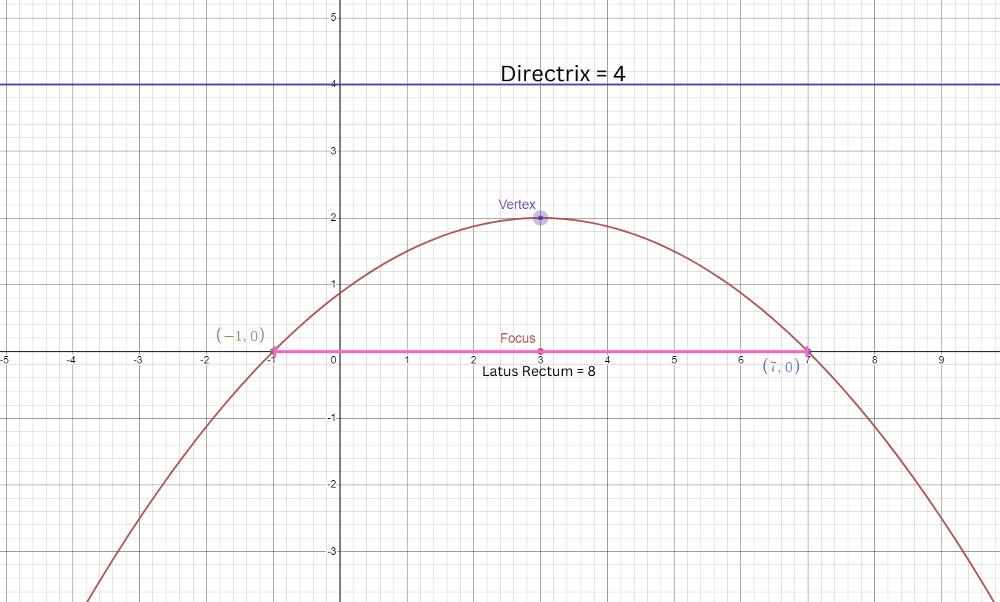

Problem 2

This figure has the equation of (x-3)2 = -8(y-2) where a is a negative constant.
By using the formula (x-h)2 = 4a(y-k) we'll analyze the equation and its components:
- First off, we will get the vertex using the formula v(h, k) by basing of the formula above and our equation which would be v(3, 2). Note that the signs are reversed.
- We will need to determine what direction this parabola opens since our equations asks for the x-values and our a is a
negative coefficient of
-8 we can conclude that the parabola will open downwards.
- We now need to get the a> which can be done by the calculation 4a/4 = -8/4, resulting in a = -2
- To get the focus for this problem we can use the formula F(h, k+p) in our case it will be F(3, 2-2) = F(3, 0) as shown in the graph.
- To get the two turning points, from the focus we will need to go left 2a or 2(1) and down in our case it will be 4. Note that the result will be in absolute value
- To get the directrix we can use this formula y = k - p for our problem it would be 4 (horizontal)
- Finally to find the length of the latus rectum we will use the equation LR = 4a in our equation it would 8